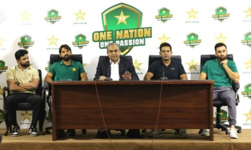
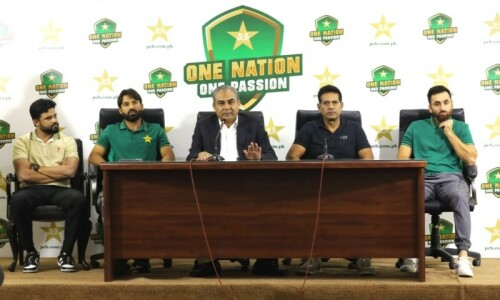
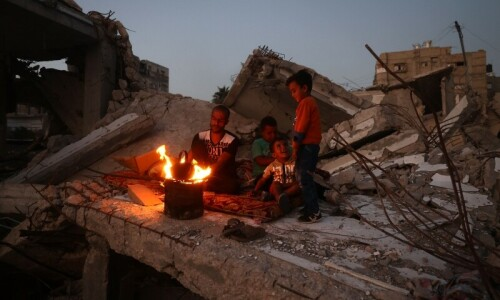
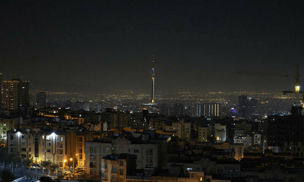

PCB announees Mohammad Rizwan as
captain for white-ball circket

Agha Salman will take charge as vice-captain for both formats.
Updated 12 minutes ago
| EPAPER | LIVE TV | DAWNNEWS URDU | IMAGES | HERALD | AURORA | CITYFM89 | ADVERTISE | EVENTS / SUPPLEMENTS | CLASSIFIEDS | Obituaries |
E-Paper | October 27, 2024
| HOME | LATEST | GAZA SIEGE | PINKTOBER | PAKISTAN | OPINION | BUSINESS | IMAGES | PRISM | WORLD | SPORT | MAGAZINES | TECH | VIDEOS | POPULAR | ARCHIVE | FLOOD DONATION |
PCB announees Mohammad Rizwan as 
|
|||||||||||||||||||||||||||||||||||
|  | Hezbollah claims to have inflicted casualties Updated about 2 hours ago |
Haris campaigning in Pennsylvania as both Published about an hour ago |
 |
The first female, Black and Asian American Published about 2 hours ago |
 |
Russian minister visits Pakistan's air chief Published about 4 hour ago |
 |
"Genocide is only possible because of upload about an hour ago |

Editorial: Next phase of this
|
|
||||||||||||
|
SPONSORED
|
|||||||||||||
MOST POPULAR |
Over last 24 hours |
||||||||||||
|
1 Saudi opens resort island at futuristic
|
 |
||||||||||||